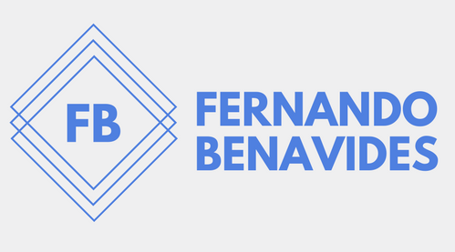

Developer in process
Developer in process

I'm Fernando Benavides an pasionate of tech and a learner for life. Actually, I'm studying the major of Computer Systems Engineer on Tecnológico de Monterrey campus Guadalajara. I studied a year as Computing Engineer in the Universidad de Guadalajara (UdeG) where I was introduced to C++ programming languague and I got more skills about it studying myself.
At the Tecnológico de Monterrey I were introduced to python... Now I always like to use python when I want to implent something easy and fast. Pyhton lover :) Now, I learning java here in Tecnológico de Monterrey and I'm exciting about it because I think that all the world should learn a languague programming as pyhton. So, for me it's important to learn this language in order to teaching it one day. I'm very exciting of studying in a very prestiguios university as it is the Tec, but I well concern that it doesn't matter where you study. At the end of the day you and just you will make the difference...
I'm an app guy, I use apps for almost everything. I want to be specialized in apps developer because I love how they make our live easier. But I not the best desinging things, so if you are a disigner or just like to desing thinks as apps, webs an so on. Don't hesitate contacting me... I consider myself a sport guy. I like to workout on the gym, play tennis, table tennis, football, run and so more.